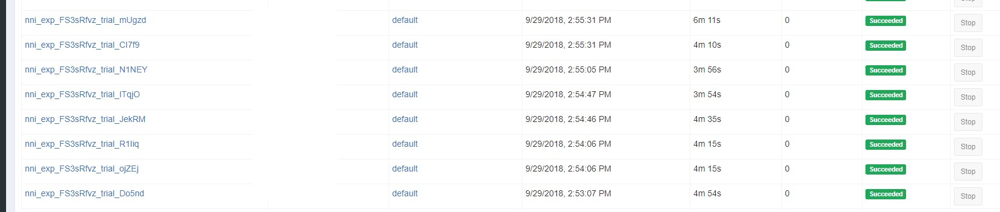
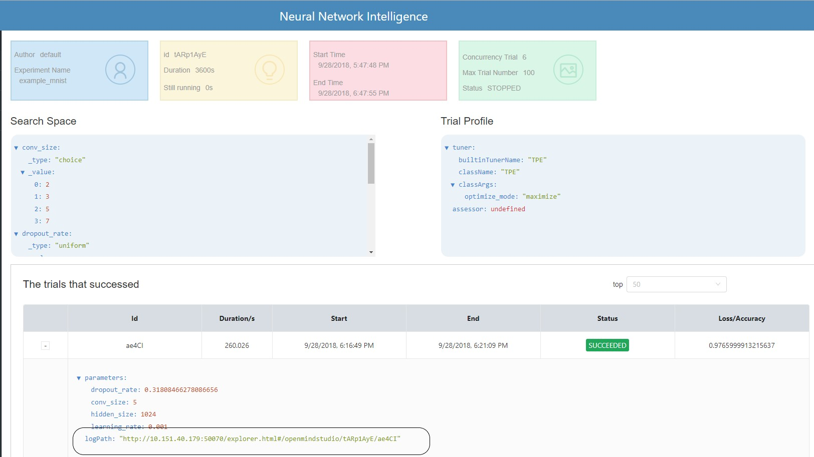

Run an Experiment on OpenPAI¶
NNI supports running an experiment on OpenPAI (aka pai), called pai mode. Before starting to use NNI pai mode, you should have an account to access an OpenPAI cluster. See here if you don’t have any OpenPAI account and want to deploy an OpenPAI cluster. In pai mode, your trial program will run in pai’s container created by Docker.
Run an experiment¶
Use examples/trials/mnist-annotation as an example. The NNI config YAML file’s content is like:
authorName: your_name
experimentName: auto_mnist
# how many trials could be concurrently running
trialConcurrency: 2
# maximum experiment running duration
maxExecDuration: 3h
# empty means never stop
maxTrialNum: 100
# choice: local, remote, pai
trainingServicePlatform: pai
# choice: true, false
useAnnotation: true
tuner:
builtinTunerName: TPE
classArgs:
optimize_mode: maximize
trial:
command: python3 mnist.py
codeDir: ~/nni/examples/trials/mnist-annotation
gpuNum: 0
cpuNum: 1
memoryMB: 8196
image: openpai/pai.example.tensorflow
dataDir: hdfs://10.1.1.1:9000/nni
outputDir: hdfs://10.1.1.1:9000/nni
# Configuration to access OpenPAI Cluster
paiConfig:
userName: your_pai_nni_user
passWord: your_pai_password
host: 10.1.1.1
Note: You should set trainingServicePlatform: pai in NNI config YAML file if you want to start experiment in pai mode.
Compared with LocalMode and RemoteMachineMode, trial configuration in pai mode have five additional keys:
- cpuNum
- Required key. Should be positive number based on your trial program’s CPU requirement
- memoryMB
- Required key. Should be positive number based on your trial program’s memory requirement
- image
- Required key. In pai mode, your trial program will be scheduled by OpenPAI to run in Docker container. This key is used to specify the Docker image used to create the container in which your trial will run.
- We already build a docker image nnimsra/nni on Docker Hub. It contains NNI python packages, Node modules and javascript artifact files required to start experiment, and all of NNI dependencies. The docker file used to build this image can be found at here. You can either use this image directly in your config file, or build your own image based on it.
- dataDir
- Optional key. It specifies the HDFS data direcotry for trial to download data. The format should be something like hdfs://{your HDFS host}:9000/{your data directory}
- outputDir
- Optional key. It specifies the HDFS output direcotry for trial. Once the trial is completed (either succeed or fail), trial’s stdout, stderr will be copied to this directory by NNI sdk automatically. The format should be something like hdfs://{your HDFS host}:9000/{your output directory}
Once complete to fill NNI experiment config file and save (for example, save as exp_pai.yml), then run the following command
nnictl create --config exp_pai.yml
to start the experiment in pai mode. NNI will create OpenPAI job for each trial, and the job name format is something like nni_exp_{experiment_id}_trial_{trial_id}.
You can see jobs created by NNI in the OpenPAI cluster’s web portal, like:

Notice: In pai mode, NNIManager will start a rest server and listen on a port which is your NNI WebUI’s port plus 1. For example, if your WebUI port is 8080, the rest server will listen on 8081, to receive metrics from trial job running in Kubernetes. So you should enable 8081 TCP port in your firewall rule to allow incoming traffic.
Once a trial job is completed, you can goto NNI WebUI’s overview page (like http://localhost:8080/oview) to check trial’s information.
Expand a trial information in trial list view, click the logPath link like: 
And you will be redirected to HDFS web portal to browse the output files of that trial in HDFS:

You can see there’re three fils in output folder: stderr, stdout, and trial.log
If you also want to save trial’s other output into HDFS, like model files, you can use environment variable NNI_OUTPUT_DIR in your trial code to save your own output files, and NNI SDK will copy all the files in NNI_OUTPUT_DIR from trial’s container to HDFS.
Any problems when using NNI in pai mode, plesae create issues on NNI github repo.